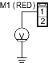
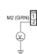

- Turn the ignition switch ON (II), and measure the voltage between the EPS control unit connector B (2P) terminal No. 1 and body ground.
EPS CONTROL UNIT CONNECTOR B (2P)

Is there battery voltage?
YES - Repair short to power in the + circuit wire between the EPS control unit and motor. 
NO - Go to step 10.
- Measure the voltage between the EPS control unit connector B (2P) terminal No. 2 and body ground.
EPS CONTROL UNIT CONNECTOR B (2P)

Is there battery voltage?
YES - Repair short to power in the - circuit wire between the EPS control unit and motor.
NO - Go to step 11.
- Turn the ignition switch is OFF.
- Substitute a known-good EPS control unit, and connect the all disconnected connectors.
- Start the engine.
Does the EPS indicator come on?
YES - Go to step 14.
NO - Check for loose EPS control unit connectors. If necessary, replace the EPS control unit and retest.
- Stop the engine, and verify the DTC.
Is DTC 41 indicated?
YES - Check for loose EPS control unit connectors and motor connector. If necessary, substitute a known-good steering gearbox and recheck.
NO - Perform the appropriate troubleshooting for the code indicated.